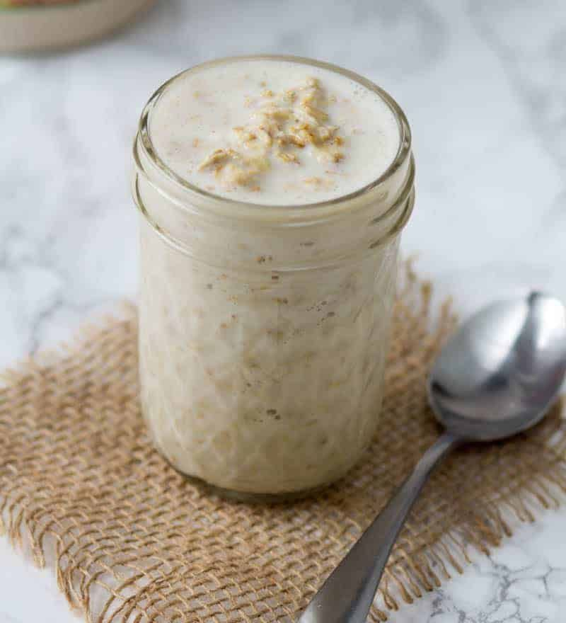

Overnight Oats
Description
Overnight oats are a quick and easy breakfast you can prepare the night before

Ingredients
- Milk (1/3 cup): Use cow’s milk, oat milk, almond milk, or whatever milk alternative you prefer.
- Yogurt (1/4 cup): Greek yogurt lends richness, flavor, and lots of protein to help you take on the day.
- Oats (1/4 cup): Make sure to use rolled oats.
- Honey (2 Tsp): Honey lends subtle sweetness.
- Chia seeds (2 Tsp): Fiber-rich chia seeds add flavor & nutrition.
- Cinnamon (1/4 Tsp): Enhance the overall flavor with ground cinnamon.
- Berries (1/4 Cup): Choose fresh, plump, vibrant berries.
Directions
- Combine milk, yogurt, oats, honey, chia seeds, and cinnamon
- Mix thouroghly: make sure there are no dry clumps of chia seeds.
- Mix in berries
- Top with lid, and store in refridgerator for at least 6 hours.
- Consume within 7 days.
Return Home